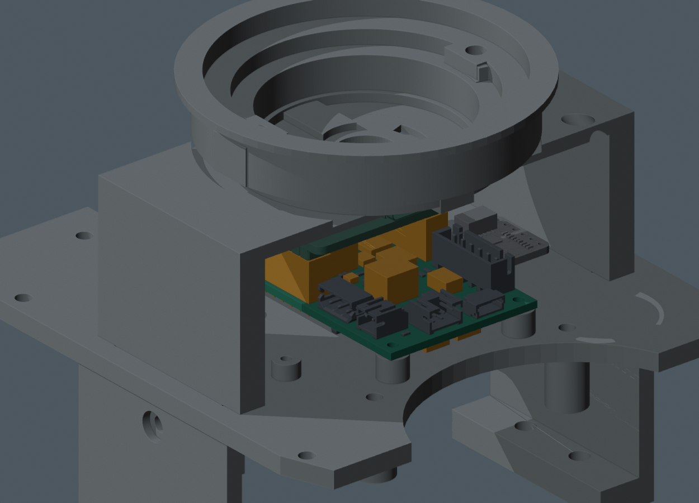
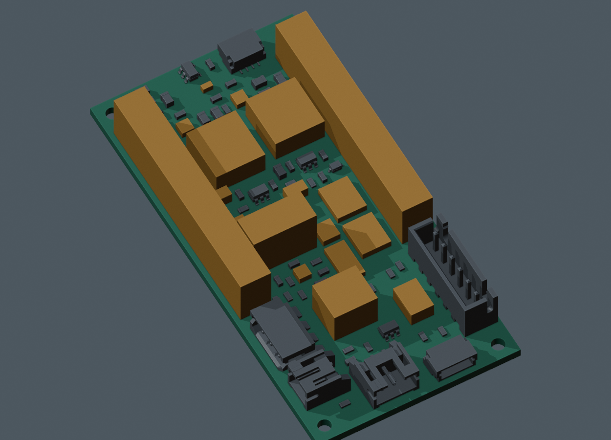
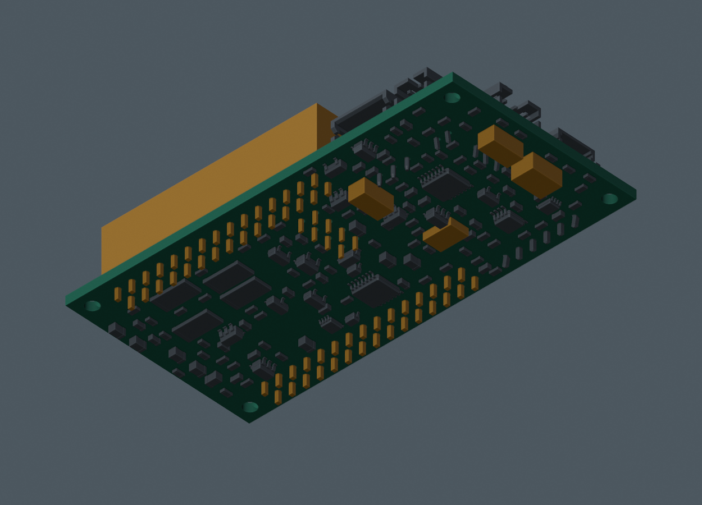

打开独立 Blender （原研究引用，未收录于本快照） · 完整说明 · 项目当前状态 · 原主模型 M1.58

| 项目 | 结果 | 边界 |
|---|---|---|
| 4 个安装轴 / 68 个 WeAct 针位 | PASS | 坐标逐项相符；不是插入深度验证。 |
| 31 段线束 / 22 个已用载板触点 | PASS | 网络定义一致，每触点一根线；尚无发布线长。 |
| 已覆盖几何 / 130 个头姿 | PASS | 有限静态姿态；不包含配对插头、全线束或连续扫掠。 |
| 板底补充器件对承重板 | PASS | 最小名义间隙 2.3 mm，含 0.2 mm 假设焊高。 |
| 排母与核心板非插合部件 | PASS | 每个排母逐项检查 219 个非插合原厂实体。 |
| 排母簧片 / 对插 / 全板装配 | BLOCKED | 外包络与插合针座相交单列记录，未虚构内腔。 |
| PCB 制造 / 实物资格 | FAIL / NOT_TESTED | 硬件仍有 52 项未连接；未制造或上电放行。 |
灰色为收到的库模型或厂家 CAD；橙色为厂家图支持的外部包络，仍含焊高、内部形状或装配假设。它们有尺寸依据，但不能称为完整精细模型。


配对插头与尾线起点、全板元件间的完整装配、全部路线与余线固定、带线装入，以及 CAM 原板 PWR 的操作通路。硬件布线收尾后再核对来源并处理主模型同步。原视频保持 M1.57-A1。
几何结果 · 接口结果 · 针面坐标（不是导线出线点） · 实际命令 · 包络尺寸与来源
PCB SHA256 2a563d9c8a37ba7da104a20e6a5fe4b7bb076f3217f8b1f5fcc3deb4595cf641。原生板、正式合同和线束文档版本分别接收；没有覆盖硬件文件。
按原尺寸导入厂家 J402，未缩放硬件。三处排母内部簧片、针腔和实际啮合仍未知；外部包络与插合零件的重叠不视为通过，也不擅自修改主模型来消除它。